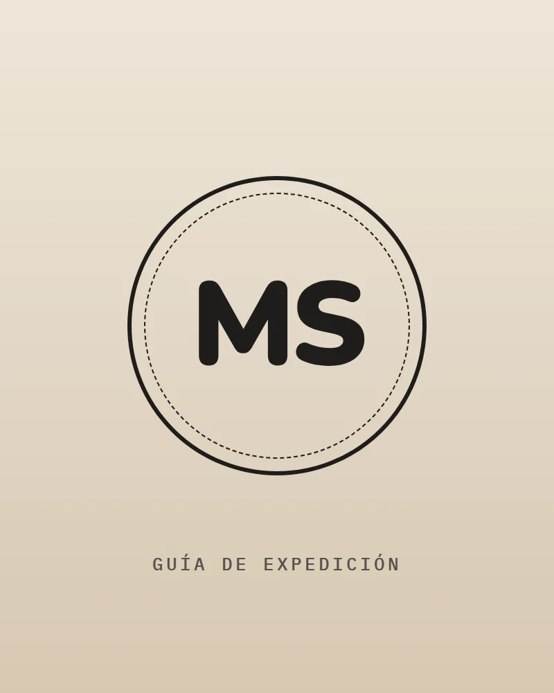
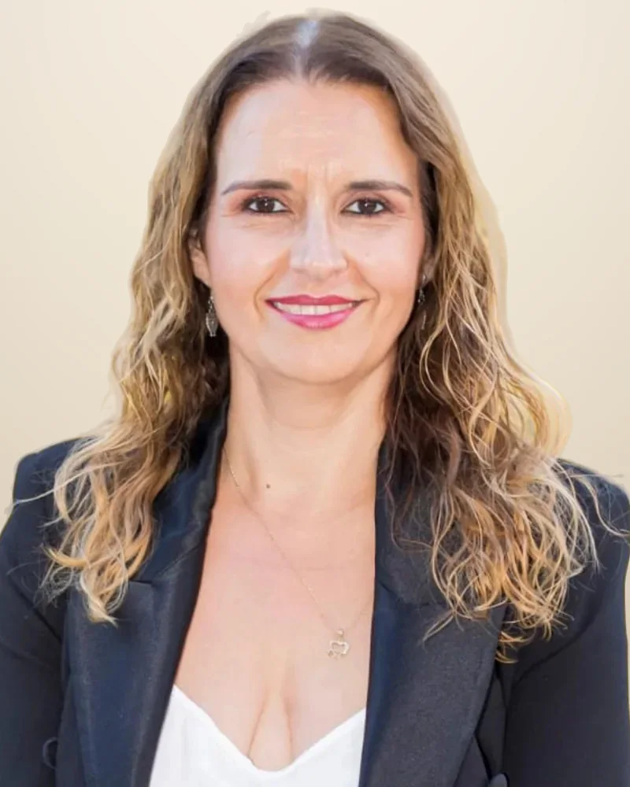

Guardiana · Nº 01
Maite Pérez Díez
Coach profesional certificada · Creadora de YUAP
- Acredita
- CPC · ASESCO
- Camino
- 7 años acompañando personas y equipos
- En YUAP
- Mente, emoción y acción
yuapPasaporte
de guardianaNº 01
de guardianaNº 01
Quiénes somos · Guardianas y guías de YUAP
Maite Pérez y Carmen son las guardianas: crearon YUAP y cuidan el mapa. En cada expedición te acompañan dos guías, Maite Sandoval y María José, para que lo vivas de tú a tú.
Guardiana · Nº 01
Coach profesional certificada · Creadora de YUAP
Guardiana · Nº 02
Pedagoga y coach creativa · Creadora de YUAP

Guía de expedición
Coach profesional · Guía de las expediciones

Guía de expedición
Psicóloga · Especialista en risoterapia

Guardiana · Creadora de YUAP
Coach profesional certificada (CPC · ASESCO) · Cofundadora de YUAP
Su camino hacia el coaching empezó con una búsqueda personal: un momento en el que necesitaba parar, entenderse mejor y tomar decisiones más alineadas. Descubrió en el coaching una herramienta que cambió su forma de mirar a las personas y las relaciones.
Desde entonces acompaña a personas, equipos y organizaciones a crecer desde dentro, con metodologías vivenciales que se aplican desde el primer día.
«El verdadero cambio no ocurre cuando solo entiendes algo, sino cuando lo experimentas.»
Guardiana · Creadora de YUAP
Pedagoga, coach creativa y experta en educación emocional (ICF) · Cofundadora de YUAP
Pedagoga, coach creativa y experta en educación emocional, certificada y avalada por ICF. Es fundadora y directora de Imaginia, centro de pedagogía, formación y desarrollo personal en Caravaca de la Cruz.
Sus veinte años de trayectoria están guiados por una convicción personal: sentirse escuchado y valorado abre nuevas posibilidades. Desde esa mirada, diseña y facilita experiencias que combinan creatividad y educación emocional para reconocer fortalezas y explorar nuevas perspectivas.
Integra metodologías como LEGO® Serious Play® para profundizar en lo que las palabras por sí solas no alcanzan: construir permite descubrir conexiones, cuestionar nuestras interpretaciones y abrir caminos de pensamiento que antes no veíamos.
«La creatividad abre posibilidades. Sentirnos capaces nos permite explorarlas.»
Guía de expedición
Psicóloga · Especialista en risoterapia
Psicóloga especializada en risoterapia, gestión emocional, autoestima y bienestar.
Cuenta con amplia experiencia impartiendo talleres y actividades para empresas, entidades sociales y colectivos educativos, utilizando el humor y la risa como herramientas para reducir el estrés, mejorar las relaciones y favorecer el bienestar personal y grupal.
Guía de expedición
Coach profesional acreditada por EMCC Global · Docente
Coach profesional acreditada por EMCC Global, docente y experta en recorrer el camino de la belleza desde dentro hacia fuera.
Lleva más de 15 años acompañando a las personas a sacar su mejor versión, reflejando la belleza del interior en el exterior. En los últimos años trabaja también en el campo de la estética, acompañando a profesionales hacia una mirada más profunda de la belleza interior y de cómo el exterior es su reflejo.
Es cofundadora de la asociación Legado Vivo, en Alcantarilla, dedicada al cuidado y la calidad de vida de las personas mayores: un espacio con numerosas actividades lúdicas y de crecimiento personal.
Cómo trabajamos
Las guardianas, Maite y Carmen, diseñan cada estación del mapa: Maite pone el método y la experiencia con personas y equipos; Carmen, la pedagogía, la creatividad y la educación emocional. En las expediciones te acompañan las guías: Maite Sandoval, con el coaching y la belleza de dentro hacia fuera, y María José, con la psicología y el humor como herramienta de bienestar.
Metodología vivencial: aprendes experimentando, no tomando apuntes.
El cambio conecta lo que piensas, lo que sientes y lo que haces.
Retos que te invitan a expresarte y a mirar tu vida desde otra perspectiva.
Grupos reducidos y presenciales, con el Pacto del Explorador como acuerdo común.
Empresas e instituciones que han confiado en nosotras [confirmar permiso para mostrarlas]
Expedición 01 · El Espejo · 17 y 18 de octubre